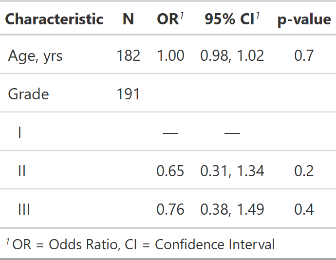
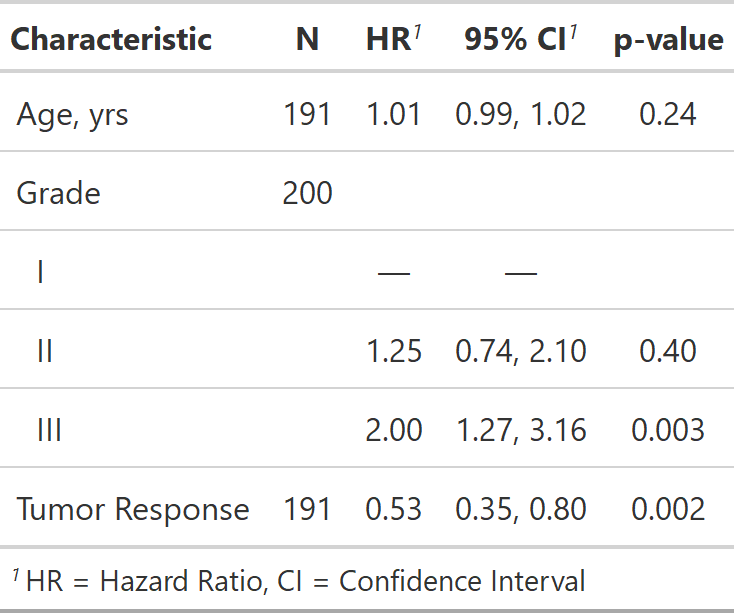

| tbl_uvregression {gtsummary} | R Documentation |
The tbl_uvregression function arguments are similar to the tbl_regression
arguments. Review the
tbl_uvregression vignette
for detailed examples.
tbl_uvregression(data, method, y, method.args = NULL,
formula = "{y} ~ {x}", exponentiate = FALSE, label = NULL,
hide_n = FALSE, show_yesno = NULL, conf.level = NULL,
estimate_fun = NULL, pvalue_fun = NULL)
data |
Data frame to be used in univariate regression modeling. Data frame includes the outcome variable(s) and the independent variables. |
method |
Regression method (e.g. lm, glm, survival::coxph, and more). |
y |
Model outcome (e.g. |
method.args |
List of additional arguments passed on to the regression
function defined by |
formula |
String of the model formula.
Uses glue::glue syntax. Default is |
exponentiate |
Logical indicating whether to exponentiate the
coefficient estimates. Default is |
label |
List of formulas specifying variables labels,
e.g. |
hide_n |
Hide N column. Default is |
show_yesno |
By default yes/no categorical variables are printed on a single row, when the 'No' category is the reference group. To print both levels in the output table, include the variable name in the show_yesno vector, e.g. 'show_yesno = c("var1", "var2")“ |
conf.level |
Must be strictly greater than 0 and less than 1. Defaults to 0.95, which corresponds to a 95 percent confidence interval. |
estimate_fun |
Function to round and format coefficient estimates. Default is style_sigfig when the coefficients are not transformed, and style_ratio when the coefficients have been exponentiated. |
pvalue_fun |
Function to round and format p-values.
Default is style_pvalue.
The function must have a numeric vector input (the numeric, exact p-value),
and return a string that is the rounded/formatted p-value (e.g.
|
A tbl_uvregression object
If you like to consistently use a different function to format p-values or
estimates, you can set options in the script or in the user- or
project-level startup file, '.Rprofile'. The default confidence level can
also be set. Please note the default option for the estimate is the same
as it is for tbl_regression().
options(gtsummary.pvalue_fun = new_function)
options(gtsummary.tbl_regression.estimate_fun = new_function)
options(gtsummary.conf.level = 0.90)
The N reported in the tbl_uvregression() output is the number of observations
in the data frame model.frame(x). Depending on the model input, this N
may represent different quantities. In most cases, it is the number of people or
units in your model. Here are some common exceptions.
Survival regression models including time dependent covariates.
Random- or mixed-effects regression models with clustered data.
GEE regression models with clustered data.
This list is not exhaustive, and care should be taken for each number reported.
Example 1

Example 2

Daniel D. Sjoberg
See tbl_regression vignette for detailed examples
Other tbl_uvregression tools: add_global_p.tbl_uvregression,
add_nevent.tbl_uvregression,
add_q.tbl_uvregression,
bold_italicize_labels_levels,
bold_p.tbl_stack,
bold_p.tbl_uvregression,
inline_text.tbl_uvregression,
modify_header,
sort_p.tbl_uvregression,
tbl_merge, tbl_stack
tbl_uv_ex1 <-
tbl_uvregression(
trial %>% dplyr::select(response, age, grade),
method = glm,
y = response,
method.args = list(family = binomial),
exponentiate = TRUE
)
# rounding pvalues to 2 decimal places
library(survival)
tbl_uv_ex2 <-
tbl_uvregression(
trial %>% dplyr::select(ttdeath, death, age, grade, response),
method = coxph,
y = Surv(ttdeath, death),
label = list(vars(grade) ~ "Grade"),
exponentiate = TRUE,
pvalue_fun = function(x) style_pvalue(x, digits = 2)
)